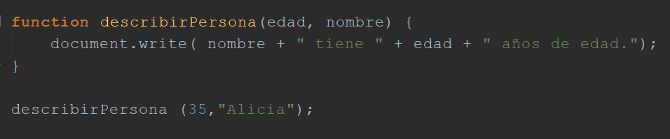
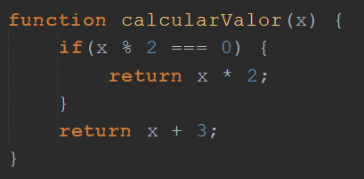
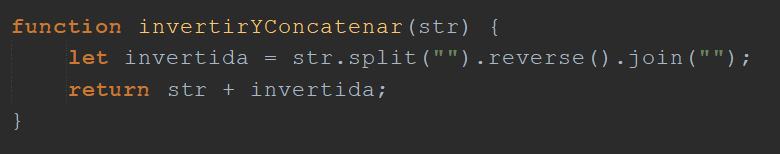

Ejemplos de actividades para trabajar en clase
Primero: conocer, recordar
En este espacio se presentan algunos ejercicios destinados a que los estudiantes conozcan qué es una función en programación, su sintaxis en JavaScript al tiempo que se familiaricen con algunos términos asociados.
Esta presentación es a modo de ejemplo, puedes crear dinámicas similares en diversas plataformas como: eXeLearning, Crea, Educaplay entre otras.
Este es solo un ejemplo, puedes pensar en otros tales cómo:
- Utilizar diagramas o tarjetas visuales para mostrar ejemplos de funciones, destacando las partes clave como el nombre de la función, parámetros o argumentos, cuerpo de la función y el valor de retorno.
- Presentar a los estudiantes fragmentos de código mezclados que contienen funciones y otras estructuras de código (como bucles y condicionales). Ellos deben identificar cuáles fragmentos contienen funciones.
- Actividad de correspondencia donde los estudiantes deben emparejar funciones con sus descripciones o con los resultados que producen, esta opción puede ser continuada con la creación de funciones similares dado el resultado esperado.
- Presentar ejemplos de cómo las funciones se utilizan en aplicaciones reales o proyectos de programación. Analizar en conjunto con los estudiantes el papel que juegan las funciones en esos contextos, discutir al respecto, investigar con ellos.
Segundo: comprender, operar
En esta etapa es posible trabajar en un IDE o en plataformas online como https://pythontutor.com/javascript.html#mode=edit, en este sitio puedes codificar y compilar código en diferentes lenguajes de programación, entre ellos JavaScript.
En este caso se propone iniciar ordenando, luego completar espacios en blanco y por último correr funciones con valores dados.
Puedes optar por brindar algunas soluciones o discutirlas en clase, sin perjuicio de esto se sugiere que logren comprobar las soluciones en el entorno de desarrollo o en algún compilador online, de esta forma se potencian los procesos de aprendizaje.
Este formato de ejercicio se puede crear en la plataforma Crea o en eXeLearning.
La opción de correr la función dados sus valores de entrada y estimar la salida es de las más potentes.
Situación de ejemplo:
Se presenta a los estudiantes la función y en la sentencia donde se la llama, el la llamada se brindan los datos de entrada (argumentos), esta práctica es muy potente y se recomienda iniciar con todo el grupo y luego en equipos más pequeños al tiempo que se puede incrementar la complejidad de las funciones a analizar.

En este caso la salida es evidente puesto que los datos son claramente diferenciables, pero existen casos más complejos que seguro despertarán debates interesantes. Exponemos algunos ejemplos:

¿Cuál será el resultado de calcularValor(5) y calcularValor(4)? Justificar...
Otras más complejas que fomenten la investigación online pueden estar asociadas a funciones que utilizan métodos más avanzados:

¿Cuál será el resultado si la función recibe "casa"? Se puede jugar con otras opciones de entrada.
Tercero: Aplicar, modificar
En este punto, los estudiantes están listos para realizar pequeñas modificaciones en funciones preexistentes. Por ejemplo, se puede empezar con una función simple que sume dos números y desafiar a los estudiantes a modificarla para que realice otras operaciones matemáticas, como la resta, la multiplicación, o incluso la división, prestando atención especial a condiciones especiales como evitar la división por cero.
Este ejercicio abre un abanico de posibilidades y variantes que se pueden explorar progresivamente. Las funciones pueden ser diseñadas para recibir valores a través de parámetros, solicitar datos durante su ejecución, retornar resultados para ser utilizados más adelante, o imprimir los resultados directamente en pantalla. La clave está en alentar a los estudiantes a experimentar con estas variaciones, poniendo a prueba las funciones con diferentes entradas para asegurar su correcto funcionamiento. Este enfoque no solo mejora su comprensión de las funciones en JavaScript, sino que también fomenta habilidades esenciales como la resolución de problemas y el pensamiento crítico.
A continuación se presentan ejercicios a modo de ejemplo:
Ejemplo 1: Sumar dos números
Función original:
function sumar(a, b) {
return a + b;
}
Variantes para solicitar:
1. Modificar para realizar la resta de a y b.
2. Modificar para multiplicar a y b.
3. Modificar para dividir a entre b, incluyendo una comprobación para asegurar que b no sea cero.
Soluciones posibles:
1. Resta:
function restar(a, b) {
return a - b;
}
2. Multiplicación:
function multiplicar(a, b) {
return a * b;
}
3. División con comprobación:
function dividir(a, b) {
if (b === 0) {
return “Error: División entre cero no está permitida.”;
}
return a / b;
}
Ejemplo 2: Convertir Fahrenheit a Celsius
Función original:
function fahrenheitACelsius(fahrenheit) {
return (fahrenheit - 32) * 5/9;
}
Variantes para solicitar:
1. Modificar para convertir Celsius a Fahrenheit.
2. Modificar para recibir la temperatura y la unidad ("C" o "F") y realizar la conversión adecuada.
Soluciones:
1. Celsius a Fahrenheit:
function celsiusAFahrenheit(celsius) {
return (celsius * 9/5) + 32;
}
2. Conversión basada en unidad:
function convertirTemperatura(temperatura, unidad) {
if (unidad === “C”) {
return (temperatura * 9/5) + 32;
} else if (unidad === “F”) {
return (temperatura - 32) * 5/9;
} else {
return “Unidad no reconocida”;
}
}
Ejemplo 3: Verificar si un número es par
Función original:
function esPar(numero) {
return numero % 2 === 0;
}
Variantes a solicitar:
1. Modificar para verificar si un número es impar.
2. Modificar para devolver un mensaje indicando si el número es par o impar.
Soluciones:
1. Impar:
function esImpar(numero) {
return numero % 2 !== 0;
}
2. Mensaje par o impar:
function verificarParidad(numero) {
if (numero % 2 === 0) {
return numero + " es par.";
} else {
return numero + "es impar.";
}
}
Ejemplo 4: Calcular el área de un círculo
Función original:
function calcularAreaCirculo(radio) {
return Math.PI * radio * radio;
}
Variantes para solicitar:
1. Modificar para calcular el perímetro de un círculo.
2. Modificar para recibir el diámetro en lugar del radio.
Soluciones:
1. Perímetro de un círculo:
function calcularPerimetroCirculo(radio) {
return 2 * Math.PI * radio;
}
2. Área con diámetro:
function calcularAreaCirculoConDiametro(diametro) {
var radio = diametro / 2;
return Math.PI * radio * radio;
}
Cuarto: Analizar
Llegados a este punto, los estudiantes ya han adquirido la habilidad de realizar modificaciones esenciales en las funciones, adaptándolas para operaciones variadas, implementando comprobaciones y validaciones de datos, e incluso gestionando diferentes métodos de salida de resultados. Ahora, es momento de elevar el desafío, introduciendo conceptos más sofisticados y profundizando en los ya trabajados.
Consideremos el primer ejemplo del paso anterior, donde los estudiantes ajustaron una función que inicialmente sumaba dos valores. Tras experimentar con modificaciones que les permitieron sumar tres, cuatro y más valores, surge una pregunta natural: ¿Cómo abordaríamos el deseo de sumar una cantidad indefinida de valores? Este escenario invita a la exploración de técnicas y conocimientos adicionales.
Veamos cómo esta necesidad nos lleva a reconsiderar la manera en que estructuramos y pensamos nuestras funciones, ampliando nuestra caja de herramientas de programación para incluir soluciones dinámicas y flexibles.
Ejemplo aplicado a la función de sumar a y b del paso anterior:
Variante 1: Sumar tres números
Modificar la función para sumar tres números.
function sumarTres(a, b, c) {
return a + b + c;
}
Variante 2: Sumar cuatro números
function sumarCuatro(a, b, c, d) {
return a + b + c + d;
}
En este punto los estudiantes notarán que debe existir otra forma de operar con muchos argumentos. Este enfoque refuerza la idea de que la programación es un proceso iterativo y exploratorio, donde la complejidad de los problemas abordados crece con la experiencia y los conocimientos que se van obteniendo.
Al introducir el concepto de sumar una cantidad indefinida de valores, los estudiantes deben conocer, comprender y aplicar el operador de propagación/resto (...), que es una herramienta poderosa en JavaScript para trabajar con funciones que reciben un número variable de argumentos.
Una forma de la función podría ser esta:
function sumarVarios(...numeros) {
return numeros.reduce(function(acumulador, valorActual) {
return acumulador + valorActual;
}, 0);
}
Estrategias de abordaje:
El tema aquí es que aparecen muchas cosas nuevas, entonces debemos explicar que sucede realmente en cada sentencia de código, esto se puede hacer de muchas formas:
- Proponer que la analicen en equipos y que comenten con sus palabras que sucede en cada caso.
- Explicar oralmente cada sentencia.
- Brindar material de estudio direccioando a cada caso.
- Abrir un espacio de investigación sobre cada una de ellas.
- Representar la función con ejemplos o analogías conocidas por los estudiantes, esta opción es muy potente y efectiva, por más que a veces los conceptos no sean tan precisos desde lo técnico, son fácilmente asimilados por los estudiantes.
A continuación se proporciona un ejemplo de explicación que puedes utilizar para este caso:
Suponemos que tenemos una bolsa de caramelos y no sabemos cuantos caramelos hay en la bolsa.
Piensa en el operador de propagación/resto (...numeros) como si fuera la bolsa de caramelos. Puedes poner dentro de esta bolsa la cantidad de caramelos que quieras, no importa si son 2, 5, 10, o más.
Ahora, imagina que quieres saber cuántos caramelos hay en total. Para eso, los sacamos uno por uno, y los vamos sumando en una calculadora o mentalmente. El método reduce es como esa calculadora. Empieza con el contador en `0` (porque aún no has sumado ninguno), y luego, por cada caramelo que sacas de la bolsa, sumas su cantidad al total que ya tenías.
Cada vez que se saca un caramelo y se suma, actualizas el número en tu calculadora que sería el método reduce. Eso es lo que hace reduce: toma dos cosas, el total que llevabas sumando hasta ahora en el acumulador y el nuevo caramelo que sacaste valorActual, los suma, y actualiza el total.
Al final, después de sacar y sumar todos los caramelos, la calculadora que sería reduce te dice cuántos caramelos tenías en total dentro de la bolsa. Ese número final es lo que la función sumarVarios te muestra al final de su ejecución.
Si lo corremos manualmente con un caso concreto podemos decir que tienes 3, 5, y 2 caramelos en la bolsa. Usando la bolsa que sería (la función "sumarVarios"), al final sabrás que tienes 10 caramelos en total, porque 3 + 5 + 2 = 10.
Esta experiencia se puede potenciar con el agregado de que se solicite al usuario el ingreso de los valores hasta que se pulse una tecla determinada, o se ingrese un determinado valor. A continuación se presenta un ejemplo de caso, la actividad y un modelo de solución posible.
Consigna
Modificar la función sumarVarios para que pueda solicitar al usuario que ingrese números indefinidamente hasta que decida detenerse ingresando una palabra clave específica, como "fin". Luego, la función debe sumar todos los números ingresados y mostrar el resultado final.
Estrategias de abordaje:
- Definir el nuevo problema.
- Identificar los requisitos.
- Discutir sobre las nuevas sentencias necesarias.
- Realizar pruebas de código.
- Reflexionar sobre lo trabajado, compartir experiencias.
Ejemplo de posible solución:
function sumarVariosInteractiva() {
let numeros = [];
let entrada;
while(true) {
entrada = prompt("Ingrese un número o escriba 'fin' para terminar:");
if (entrada.toLowerCase() === 'fin') {
break;
}
let numero = parseFloat(entrada);
if (!isNaN(numero)) {
numeros.push(numero);
} else {
alert("Por favor, ingrese un número válido");
}
}
let suma = numeros.reduce(function(acumulador, valorActual) {
return acumulador + valorActual;
}, 0);
alert("La suma de los números ingresados es: " + suma);
}
Quinto y sexto: Crear, diseñar, evaluar
Al llegar a este punto, los estudiantes ya han avanzado desde comprender la sintaxis básica y la funcionalidad de las funciones en JavaScript, pasando por modificar funciones existentes para adaptarlas a nuevos requisitos, hasta analizar y expandir funciones para manejar escenarios más complejos. Ahora, están listos para el desafío creativo de diseñar y construir sus propias funciones desde cero, aplicando todo lo aprendido para resolver problemas prácticos o desarrollar pequeños proyectos. Luego podrán evaluar de forma crítica las soluciones propias como las de los compañeros.
Algunos ejemplos de proyectos a pedir son:
- Una calculadora básica.
- Un conversor de bases numéricas.
- Un conversor de temperaturas.
- Una calculadora de áreas y perímetros de figuras básicas.
Estrategias de abordaje:
- Identificar el problema a resolver.
- Identificar los requisitos.
- Documentar.
- Implementar.
- Realizar pruebas de código.
- Reflexionar sobre lo trabajado, compartir experiencias, intercambiar proyectos entre los compañeros.
Este operador de extensión es representado con los tres puntos suspensivos en JavaScript, en otras tecnologías como Python se utiliza el asterisco (*)